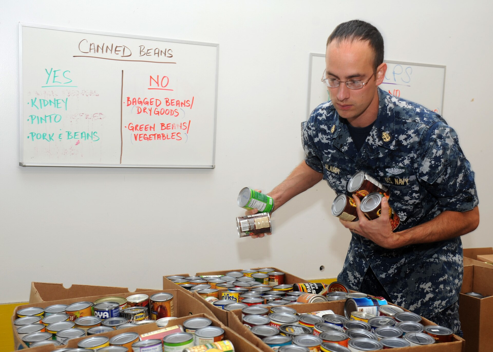

Doação de alimentos
Arrecadação de alimentos para famílias que precisam de apoio.
Conheça algumas formas de participação.

Arrecadação de alimentos para famílias que precisam de apoio.
Participação de voluntários na organização e entrega das doações.
Veja uma mensagem com informações sobre como participar.